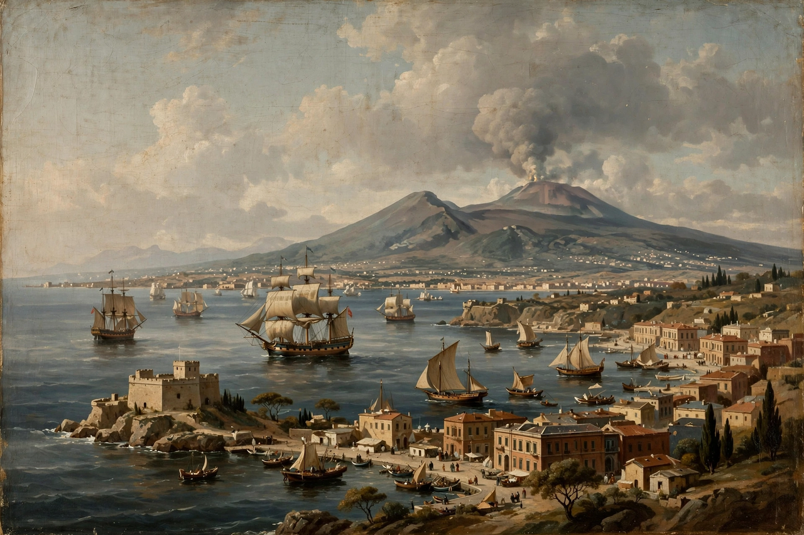

Kingdom of the Two Sicilies
| Kingdom of the Two Sicilies | |
|---|---|
 | |
| Capital | Naples |
| Established | 1816 |
| Dissolved | 1861 (Italian unification) |
| Monarchs | Ferdinand I; Francis I; Ferdinand II; Francis II |
| Dynasty | House of Bourbon-Two Sicilies |
The Kingdom of the Two Sicilies (Italian: Regno delle Due Sicilie) was a monarchy in Southern Italy that existed from 1816 to 1861, uniting the island of Sicily with the southern part of the Italian peninsula (the former Kingdom of Naples). It was the largest of the Italian states before unification and was ruled by a cadet branch of the Spanish Bourbons.
Origins of the name
The peculiar name derives from the medieval division of the old Norman-Hohenstaufen Kingdom of Sicily: after the War of the Sicilian Vespers (1282), the island went to the Crown of Aragon while the mainland territories retained the name "Sicily" (the "Sicily this side of the Faro" — the Strait of Messina lighthouse). Two kingdoms both called Sicily thus existed for centuries. Their crowns were held together under Spanish viceroys and later under Bourbon kings, but formally merged only in December 1816, when Ferdinand I united Naples and Sicily into a single state after the Napoleonic interlude.
History
The kingdom was restored at the Congress of Vienna after the fall of Joachim Murat's Napoleonic Kingdom of Naples. Ferdinand I and his successors ruled as conservative, centralising monarchs; Sicilian resentment of Neapolitan domination flared in the revolutions of 1820 and 1848, both suppressed with Austrian or royal force. Under Ferdinand II (r. 1830–1859) the kingdom saw early industrial ventures — Italy's first railway, from Naples to Portici (1839), and early steamships — alongside political repression that earned him the nickname "King Bomba" after the bombardment of Messina in 1848.
The end came swiftly in 1860. Giuseppe Garibaldi's Expedition of the Thousand landed in Sicily in May 1860, defeated the Bourbon armies with the help of local volunteers, crossed to the mainland, and took Naples. Francis II made a last stand on the Volturno and in the fortress of Gaeta, which fell in February 1861. A plebiscite ratified annexation to Piedmont-Sardinia, and in March 1861 the Two Sicilies became part of the new Kingdom of Italy. Years of guerrilla resistance in the south — the so-called brigantaggio — followed.